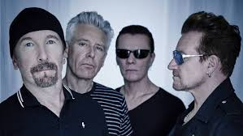

U2
Banda irlandesa de rock formada en 1976 en Dublín.

Integrantes del grupo
Bono
The Edge
Adam Clayton
Larry Mulien Jr
Discografía
Grandes éxitos de U2
Año
Disco
1980
Boy
1987
The Joshua Tree
1991
Achtung Baby
"The Joshua Tree" fue el álbum más exitoso.
Sitio web oficial
www.u2.com
Volver